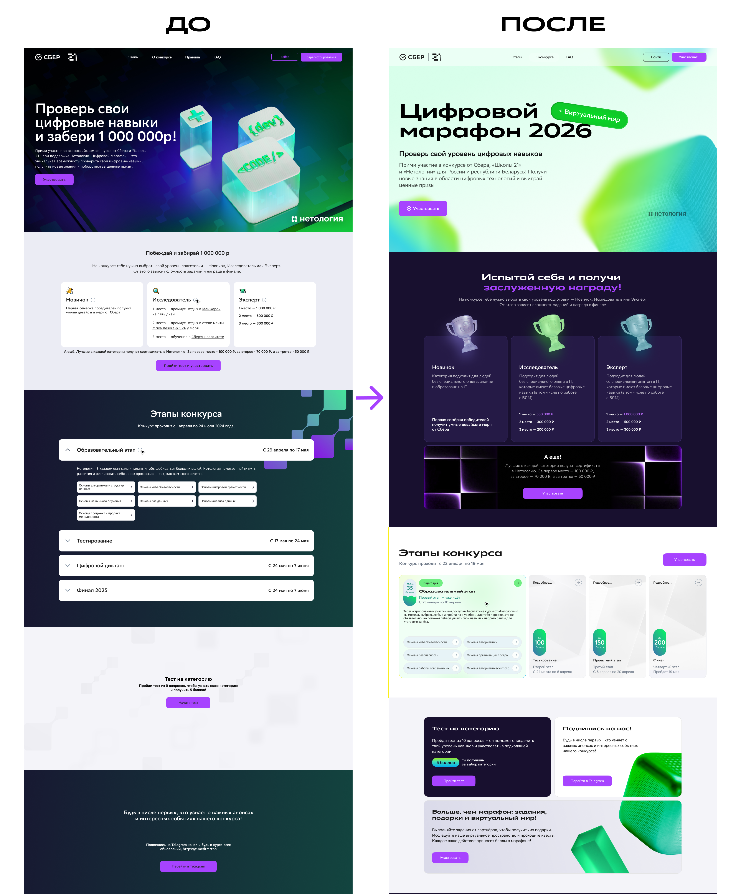
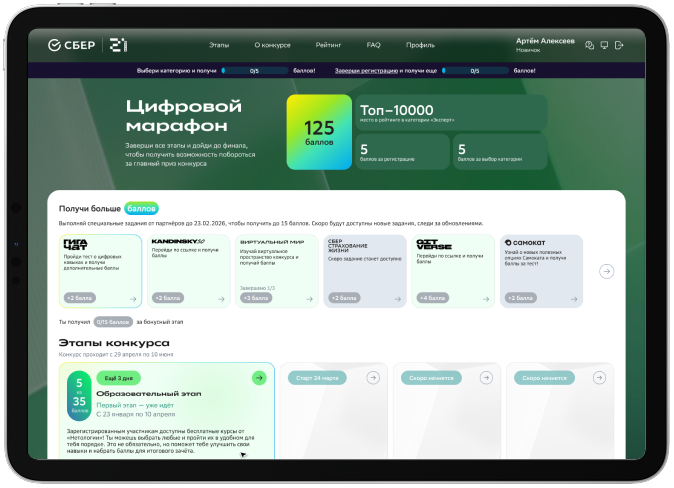
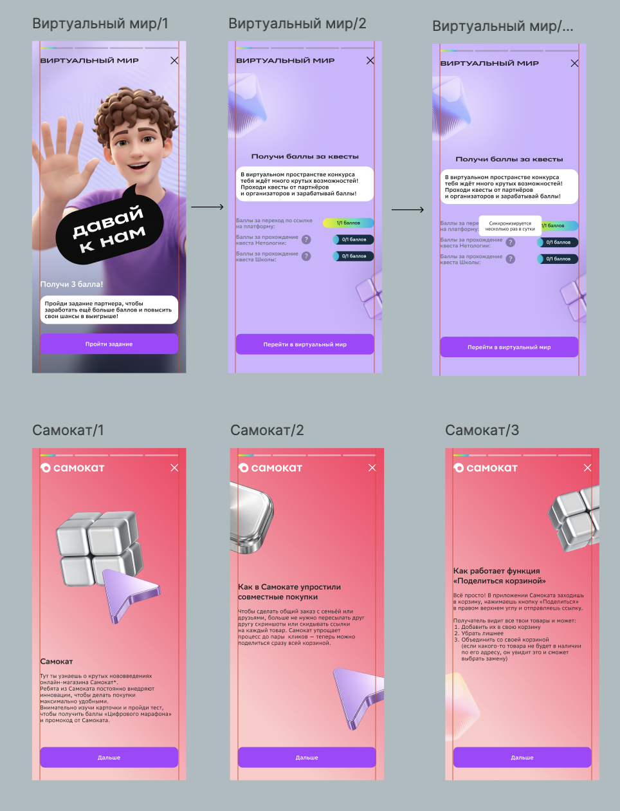

Цифровой марафон
Можно посмотреть
2026
Цифровой марафон
2026
- Контекст
Редизайн сайта марафона Сбера, «Школы 21» и Нетологии в новой дизайн-системе Сбера.
- Период
- 2026
- Моя роль
- Продуктовый дизайн, A/B-тестирование и руководство командой из 3 дизайнеров.
- Направления
- Платформа
- Десктоп, планшет, мобильные устройства
Задача
Сделать регистрацию главным сценарием: сократить форму с 12 до 6 полей, разбить её по шагам и собрать единый UI-kit.
Решение
Сокращение формы регистрации с 12 до 6 полей, разделение на шаги и единый UI-kit. Редизайн охватывает лендинг платформы конкурса, личный кабинет и тестирование.





Результат
По итогам тестов: конверсия из визита в регистрацию выросла с 10% до 20%, прохождение этапов до конца — в 3 раза.